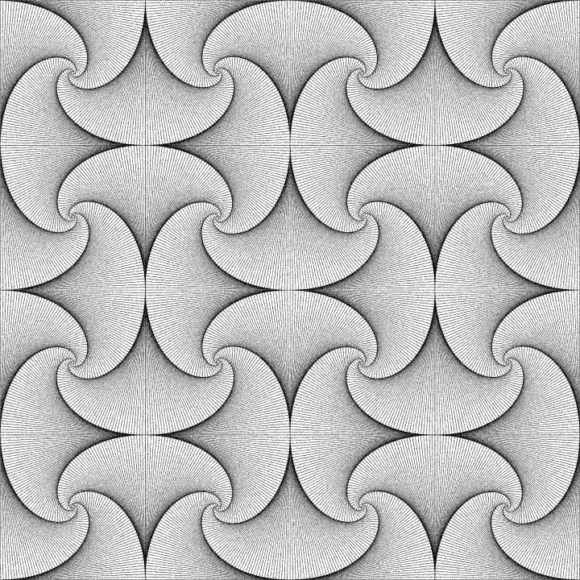
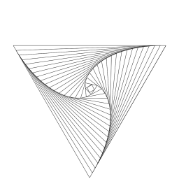
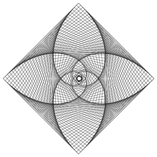

Straight Line Curves
You can draw a lot of fun curves even if you only know how to draw straight lines. For programmers, that means that a DrawLine function can be your friend.
We start by having fun with a paper placemat and a pencil,
end with the Four Ant Problem, and do some math and programming in
between.
Oh, and there's homework if you're up to it.
Placemat Spirals
Imagine that you're in an Italian restaurant with a rambunctious child,
the dinner is slow to arrive and the child is getting restless.
Here's an old-school way to distract them. Flip over your paper placemat
and grab a pencil.
Draw a straight line from the top left-hand corner to a point at
distance d down from the top of the right-hand edge, where d is
a small distance like a finger-width.
This is shown in Step 1 of Figure 1.
Then, draw a straight line from where it hits the
right-hand edge to a point at
distance d left from the bottom of the right-hand edge.
This is shown in Step 2 of Figure 1.
Next, draw a straight line from where it hits the
bottom edge to a point at
distance d up from the bottom of the left-hand edge.
This is shown in Step 3 of Figure 1.
Finally, draw a straight line from where it hits the
left edge to a point at
distance d to the right of the left edge,
but this time measured along the line you drew in Step 1.
This is shown in Step 4 of Figure 1.
Figure 1: The first four lines on the back of a placemat.
Now repeat this process, each time measuring the distance d along your
old line. Keep going until you run out of space.
The process should look a bit like Figure 2. Notice that you see four
spiralling curves, even though you drew only straight lines.
Let's call these curves "placemat spirals".
Figure 2: Constructing a placemat spiral.
One cool this about this is that you will get approximately the same curves
no matter what your value of d is (so long as it is small),
and it won't matter if your lines are wobbly,
or if you don't measure d exactly right. Figure 3 shows a version that I drew
by hand using a Paint tool.
Figure 3: Hand-drawn version.
Figure 4 shows what it looks like if you start with a square.
Figure 4: Square version.
You can take Figure 4, reflect it in the vertical axis,
then reflect them both
in the horizontal axis to give the tile in Figure 5.
Some nasty Moire
patterns start to show up when you scale these images, so I've added some
random noise to the image to cancel them out.
Figure 5: Four copies of Figure 4 reflected and tiled.
Now we can tile four copies of Figure 5 to give Figure 6.

Figure 6: Four copies of Figure 5.
Let's tile four copies of Figure 6 to give Figure 7.
The blurring caused by resizing is starting to hide
the fact that these curves were created from straight lines.
Figure 7: Four copies of Figure 6.
Finally,
let's tile four copies of Figure 7 to give Figure 8.
Figure 8 uses 256 copies of Figure 4
(128 left-handed and 128 right-handed).
Figure 8: Four copies of Figure 7.
We can do it in color too, as shown in Figures 9 and 10.
Figure 9: Figure 4 in color.
Figure 10: 256 copies of Figure 9.
Fun with Code
Of course, I used a computer to draw
Figures 2, 4-10.
Writing a program to generate one of these spirals is
a simple exercise in coding vector mathematics. All graphics APIs
contain a line-drawing function. For example, DirectX 9 has a
D3DXLINE object that will draw a series of straight lines for you.
The following code asks the D3D device to create a line object for us,
sets its thickness and turns antialiasing on.
const float LINETHICKNESS = 1.5f;
LPD3DXLINE line;
D3DXCreateLine(pD3DDevice, &line);
line->SetWidth(LINETHICKNESS);
line->SetAntialias(TRUE);
D3DX lines take an array of D3DXVECTOR2s and joins the dots with a
series of lines. Let's declare such an array.
const int POINTCOUNT = 10000; //maximum number of points
D3DXVECTOR2 points[POINTCOUNT];
int pointcount=0; //number of points actually used
Next, you need to write the code to fill in the array
with the intersection points of our lines above.
I'm not going to do it for you because it would make a nice exercise
in my Game Math and Physics class. Rest assured that you should only need half
a dozen lines of so of C++ code to get it right.
Once you've done that, you can draw the lines by sticking
the following code into your render loop.
Make sure you get the line color right.
It needs to be 0xFF000000 to get black lines.
It's tempting to use
color 0x00000000 instead, but that won't work. You have to
set the alpha channel to 0xFF or else your lines will be completely
transparent.
const unsigned int LINECOLOR = 0xFF000000; //black
line->Begin();
line->Draw(points, pointcount, LINECOLOR);
line->End();
Of course, like all DirectX objects, lines have to be released when
you are through with them.
line->Release();
What are Those Curves?
The mathematician in me wants to know the equation for those spirals.
Conveniently, as d gets smaller, they seem to converge to
a continuous curve as shown in Figure 11.
Figure 11: As d decreases the curves appear to converge.
It's easier to specify the curve in polar coordinates rather
than Cartesian coordinates. Polar coordinates are defined by
specifying a point for the Origin and a direction for an
axis (or "pole").
A point p in polar coordinates is then specified by
an angle measured counterclockwise from the axis,
and a distance to be measured along the line at that angle,
as shown in Figure 12.
If you're not familiar with polar coordinates, take a look at
Chapter 7 of
Dunn and Parberry.
Figure 12: Point p in polar coordinates.
In polar coordinates, the i'th of the four placemat
spirals is given by θ = ln(r)+c, where c
is a constant that depends on the width of the square
and i, and ln is the natural logarithm.
The technical term for this is a logarithmic spiral.
For example, the following code generates one
of the arcs of the spiral.
void Spiral(D3DXVECTOR2 origin, D3DXVECTOR2* p, int max, float d){
float r=0.0f, theta=0.0f;
p[0] = origin;
for(int i=1; i<max; i++){
r += d;
theta = log(r) - 2.0545f;
p[i] = origin + r*D3DXVECTOR2(cos(theta), -sin(theta));
} //for
} //Spiral
To check that it's the right function, you can try drawing
the spiral generated by the above code on top of some
placemat spirals (see Figure 13).
Figure 13: Logarithmic spiral (black) superimposed on some
placemat spirals (gray).
The Four Ants Problem
Figure 14: Four ants named Albert, Brittany, Christopher, and Diane.
Suppose we have four ants A, B, C, and D at the four corners of a square
as pictured in Figure 14 above.
Starting at the same time and moving at the same speed,
A walks towards B, B walks towards C, C walks towards D,
and D walks towards A. As shown in Figure 15,
the ants follow exactly the
logarithmic spiral from Figure 4.
Figure 15: The paths traced by the ants.
There's a classical math question that asks how far each ant walks.
It turns out that if the square has side of length s, then each
ant walks distance exactly s. The intuition is that each ant
moves (in the limit) orthogonally to the one chasing it, and thus never gets
any further away. I tested this myself by printing a high-resolution
version of Figure 4
and cutting a piece of red string to the length of one of its sides
(Figure 16).
As you can see below, the path traced by one of the ants does appear
to have the same length as the string (Figure 17),
in accordance with the theory.
Figure 16: The red string is as long as one of the sides of the square.
Figure 17: The spiral appears to be the same length as the red string.
Notice the Moire patterns in Figures 16 and 17.
I added noise to Figure 5 to prevent that
from happening in Figures 5-8, which is why they appear
darker than Figure 4 even though the former are made from many
copies of the latter.
Variations on a Theme
Of course, we don't have to restrict ourselves to rectangular placemats.
Figure 18 shows the patterns that you get from some regular polygons
from triangles up to decagons. Hexagons are of particular interest
because, like rectangles, they can be used to tile the plane
as in Figure 21. The effect isn't as pleasing as Figures 5-8 because
there's no obvious way of avoiding the discontinuity where the tiles meet.

Figure 18: Not just rectangles any more.
Figure 19: Tiling with the hexagons from Figure 18.
We can mitigate the effect somewhat by taking a left-handed copy and
overlaying it with a right-handed copy (of an n-gon where n is even)
as in Figure 20. Doubled hexagons appear to
tile without obvious discontinuities (Figure 21).

Figure 20: Double spirals.
Figure 21: Tiling with the hexagons from Figure 20.
Triangles tile as well as rectangles if you
flip alternate tiles, since an even number of triangles meet
at any corner (See Figures 22 and 23).
Figure 22: Tiling with triangles.
Figure 23: Closeup of Figure 22.
If you look at it the right way and squint,
Figures 22 and 23 look like a bunch of overlapping clover leaves.
Each hexagonal
cluster of tiled triangles
looks like three-leaved clover.
Take a closer look at Figures 24 and 25 if you can't see it.
Figure 24: Larger version of of Figure 22 in green.
Figure 25: Clover leaves hidden in Figures 22-24.
Homework
Here are a few homework exercises for aspiring graphics programmers.
-
Given a distance d and a line segment pq
between points p
and q, devise a method to find the point r that is distance d from p
along pq, as shown in Figure 26.
You will probably need the following concepts:
vector addition, vector length, vector multiplication
by a scalar, and vector normalization. If your method uses trig
functions, then you are probably overthinking it.
Figure 26: Given p, q, and d, find r.
-
Using your algorithm from Exercise 1,
write an app to more accurately draw the pattern from Figure 3.
Use your favorite operating system, programming language, and
graphics API.
Figure 27 shows a screenshot of my app under Windows.
Figure 27: Screenshot of solution to Exercise 2.
-
Modify your solution to Exercise 2 so that it shows the
lines being drawn one at a time as shown in Figure 2.
Leave about half a second pause between lines.
-
Modify your app from Exercise 2 so that it draws only the straight
line segments
that form the placemat spirals as shown in Figure 28.

Figure 28: Screenshot of solution to Exercise 4.
-
Use your code from Exercises 3 and 4 to make
an app that shows the Four Ants animation from Figure 15.
(I'm assuming that you know how to display and rotate an ant
sprite already.)
-
Write code to draw the logarithmic spiral
θ = ln(r) - 2.0545f on top some placemat spirals so
that you can verify Figure 13. (You will have to choose a quite
small distance d to get it close to convergence).
-
Modify your app from Exercise 2 to use a square aspect ratio
as in Figures 4, and 29.
Print out the resulting placemat spirals with a small value of d.
Verify Figures 16 and 17 that show that the length of
each spiral is the same as the side of the square.
(You will have to provide your own piece of string.)
Figure 29: Screenshot of app used in Exercise 7.
-
Modify your app so that it can handle drawing spirals in
a regular n-gon, where n is at least 3.
Start by figuring out how to draw a regular n-gon. The rest
should be easy.
The best way to draw a regular n-gon is to think in polar coordinates.
Figure 30 shows a screenshot of my app under Windows.
Figure 30: Screenshot of solution to Exercise 8.
-
Modify your app so that it tiles using the regular
hexagons from Exercise 8. You'll have to use a little trigonometry to
get the spacing right.
Figure 31 shows a screenshot of my app under Windows.
Figure 31: Screenshot of solution to Exercise 9.
-
Combine your solutions to Exercises 5 and 8 to produce an
app that can animate n ants on an n-gon. Figure 32 shows
3 ants on a triangle,
8 ants on an octagon,
and 20 ants on a 20-gon.
Figure 32: Solution to Exercise 10.
Created January 23, 2013.
Last updated August 7, 2019.